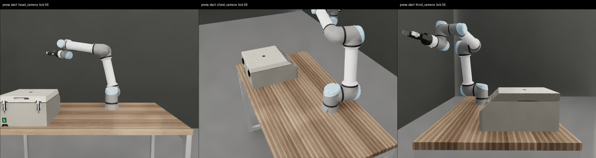
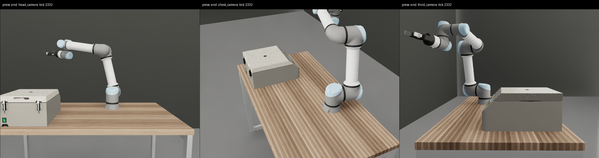
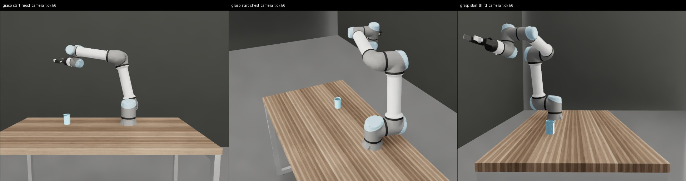
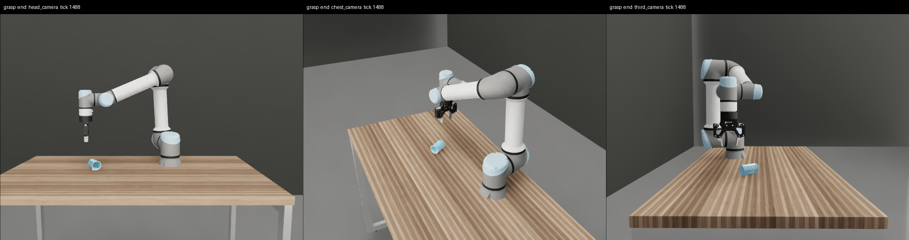

返回数据集台账
UR5e 运动学桌单例复核
按烧杯实际位姿重算后的抓取单例
每项一个原生回合，等待画面复核。表格按同一物理步排列头部、胸部和第三视角。安装位姿与旧采集相同。
离心机双按钮按压
固定物首末帧核验通过，任务原判据通过。
固定物首末帧相对名义位置的最大偏差 0.000250 mm。
开录至末帧，机身原生世界位姿七个分量在 570 帧中相同。初次导出因四元数模长为 0.999849 退出，随后在 CPU 将同一姿态写成单位四元数，复核机身位移为 0 mm、转角为 0°。头部画面左缘裁到一部分机身；胸部视角可同时看见桌面和机身。
Button005 行程 0.400 mm、峰值力 1.07 N，Button006 行程 0.400 mm、峰值力 1.15 N。超过 1 N 的非预期接触对 0 组。

开录帧，物理步 56
末帧，物理步 2332100 mL 烧杯抓取
固定物首末帧核验通过，任务原判据未通过。
固定物首末帧相对名义位置的最大偏差 0.000250 mm。
抬升 -16.95 mm，距任务终点 167.98 mm，手与杯的接触峰值 75.42 N。超过 1 N 的非预期接触对 0 组。

开录帧，物理步 56
末帧，物理步 1488